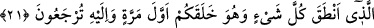
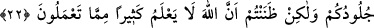
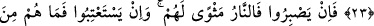
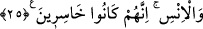

NİÇİN ALEYHİMİZE
ŞÂHİDLİK ETTİNİZ?
19. Allah’ın düşmanları, ateşe sürülmek üzere toplandıkları gün, hepsi bir araya
getirilirler.
20. Nihâyet oraya geldikleri zaman kulakları, gözleri ve derileri, işledikleri şeye
karşı onların aleyhine şâhidlik edecektir.
21. Derilerine: Niçin aleyhimize şâhidlik ettiniz? derler. Onlar da: Her şeyi
konuşturan Allah, bizi de konuşturdu. İlk defa sizi o yaratmıştır. Yine O’na
döndürülüyorsunuz, derler.
22. Siz ne kulaklarınızın, ne gözlerinizin, ne de derilerinizin aleyhinize şâhidlik
etmesinden sakınmıyordunuz, yaptıklarınızdan çoğunu Allah’ın bilmeyeceğini
sanıyordunuz.
23. Rabbiniz hakkında beslediğiniz zan var ya, işte sizi o mahvetti ve ziyana
uğrayanlardan oldunuz.
24. Şimdi eğer dayanabilirlerse, onların yeri ateştir. Ve eğer (tekrar dünyaya
dönüp Allah’ı) hoşnut etmek isterlerse, memnun edilecek değillerdir.
25. Biz onlara birtakım arkadaşlar musallat ettik de onlar önlerinde ve
arkalarında ne varsa hepsini bunlara süslü gösterdiler. Kendilerinden önce gelip
geçmiş olan cinler ve insanlar için (uygulanan) azap onlara da gerekli olmuştur.
Kuşkusuz onlar hüsrana düşenlerdi.